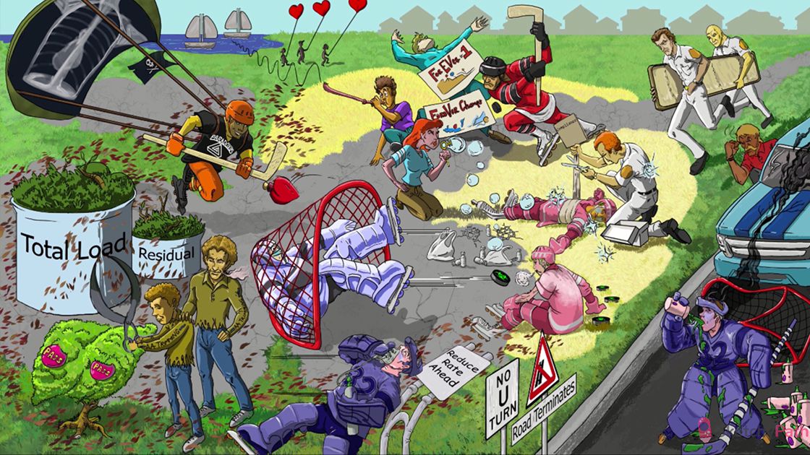

Obstructing street: in COPD, obstruction prevents air from leaving the lungs (trapped in distal airways)
“NO U TURN”: COPD causes irreversible obstruction
Smoker: cigarette smoking is the most important risk factor for COPD
Pink puffer in distal cul-de-sac: emphysema (permanent airway dilation) affects the distal airways
End of cul-de-sac: alveolar sac
Distal cul-de-sac path: alveolar duct
Proximal cul-de-sac path: respiratory bronchiole
Blue bloater in the proximal street: chronic bronchitis (chronic productive cough) involves the proximal large airways
“Street Terminates”: terminal bronchioles (emphysema occurs distally, while chronic bronchitis involves the airways here and more proximally)
Dead grass at cul-de-sac entry: centriacinar emphysema affects respiratory bronchioles and spares alveolar ducts and sacs
Sweaty upper jersey: centriacinar emphysema preferentially affects the upper two-thirds of the lung
Toxic hockey puck: toxins (e.g. in cigarette smoke) collect in the respiratory bronchioles and activate an inflammatory response
First responders: neutrophils recruited to distal airways
First responder cutting elastic bandage: neutrophils produce elastase (breaks down elastin)
Raised COMPLIANCE book: damage by elastin increases compliance of the distal airway (decreased elasticity)
AA trimming: alpha-1 antitrypsin (major serum inhibitor of neutrophil elastase)
Uninhibited shears: AAT deficiency → uninhibited neutrophil elastase → destruction of distal airways
Clippings throughout cul-de-sac: AAT deficiency causes panacinar emphysema (affects entire respiratory unit)
Torn shirt bottoms: AAT deficiency predominantly affects the lower lobes of the lung
Collections in liver bush: AAT deficiency → non-secreted AAT accumulates in hepatocytes → liver damage and cirrhosis
“PASS” frisbee: non-secreted AAT stains PAS positive
Young trimmer: AAT deficiency causes emphysema in young patients
Smoking: smoking increases emphysema risk in patients with AAT deficiency (directly inhibits AAT)
Huffing and puffing: emphysema presents with gradually progressive dyspnea
Party blower: emphysema presents with diffuse bilateral wheezing
Tripod position: classic emphysema pose (extra anchor for accessory muscles of respiration)
Pursed lips: helps maintain pressure to inflate distal airways (in emphysema)
Skinny arm: emphysema may cause weight loss
Inflated chest kite: emphysema causes hyperinflated lungs (on CXR: flat diaphragm, 10+ posterior ribs shadows, increased parenchymal radiolucency, lengthened cardiac silhouette)
“Paradoxus”: emphysema can cause pulsus paradoxus (causes a > 10 mmHg decrease in systolic pressure during inspiration)
Distant heart kites: emphysema presents with distant heart sounds
Distant lung sails: emphysema can present with diminished lung sounds
Full “Total Load” bin: COPD causes increased total lung capacity (TLC)
Full “Residual” bin: COPD causes increased functional residual capacity (FRC)f
Dropping “ForEVer #1” sign: COPD causes decreased forced expiratory volume in 1 second (FEV1)
Dropping “ForeVer Champs” sign: COPD causes decreased forced vital capacity (FVC)
“7-shaped hockey puck”: FEV1/FVC is < 0.7 in COPD
Colorless heme plastic trash LOW on the ground: emphysema causes a low DLCO (diffusion capacity of the lung for carbon monoxide)
Pink face: hyperventilation EARLY in course maintains normal arterial oxygen level (PaO2)
Blowing OH bubbles: hyperventilation EARLY in course causes respiratory alkalosis
Popping OH bubbles: in LATE emphysema there is severe air trapping → CO2 retention and respiratory ACIDOSIS
Late blue face: in LATE emphysema there is a severe decrease in DLCO → decreased PaO2 (hypoxemia) → cyanosis
Blue bloater #32: chronic bronchitis is defined as productive cough for at least 3 consecutive months in each of 2 consecutive years
Hacking up sports drink: chronic bronchitis presents with a productive cough
Mucus on tracheal stick: chronic bronchitis involves mucus gland hypertrophy and hypersecretion in larger airways (trachea, bronchi, and bronchioles)
Goblet bottles in terminal street: chronic bronchiolitis (as part of chronic bronchitis) causes goblet cell metaplasia and proliferation
Bottle plugs: mucus hypersecretion causes mucus plugsn in bronchioles → distal airway obstruction (in chronic bronchitis)
CO2 fumes: EARLY in course - mucus plugs trap air in distal airways → increased PaCO2 and respiratory ACIDOSIS (in chronic bronchitis)
Blue face: EARLY in course - mucus plugs limit oxygenation of alveoli → decreased arterial pO2 (hypoxemia) → cyanosis (in chronic bronchitis)
O2 knocking over rate: O2 supplementation can decrease RR causing respiratory failure in COPD patients
O2 knocking over arch: O2 supplementation inhibits firing of peripheral chemoreceptors (aortic arch and carotid bodies sense decrease in PaO2)
Hypoxic goalie stretching net: chronic hypoxemia in COPD → hypoxic vasoconstriction → pulmonary arterial hypertension
Corked heart bottle: pulmonary hypertension due to hypoxic vasoconstriction in COPD can lead to right heart failure (COR PULMONALE)